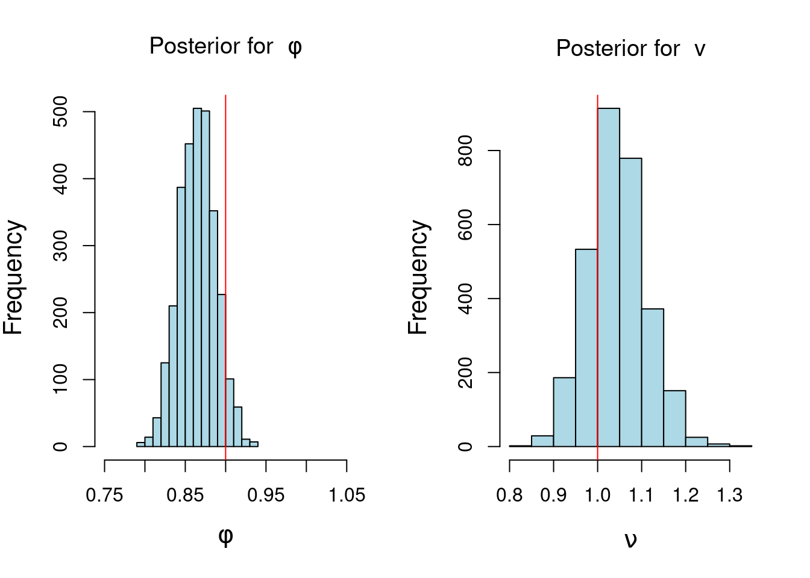
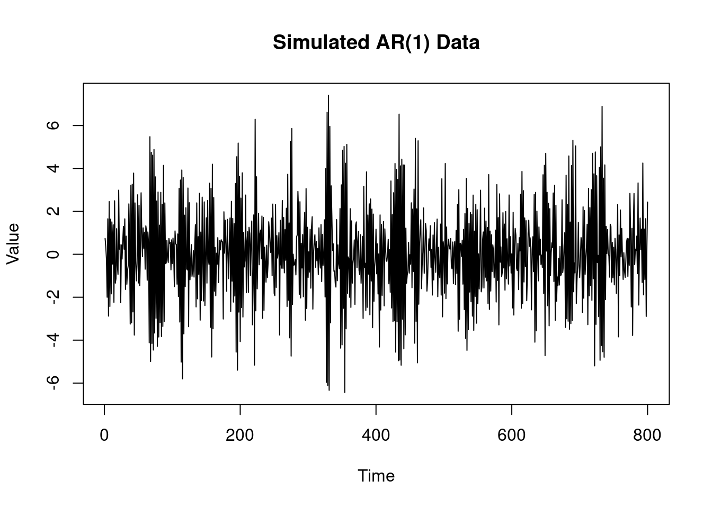

Homework - MLE and Bayesian inference in the AR(1)
Time Series Analysis
Bayesian Statistics
This lesson we will define the AR(1) process, Stationarity, ACF, PACF, differencing, smoothing
Author
Oren Bochman
Published
October 23, 2024
Keywords
time series, stationarity, strong stationarity, weak stationarity, lag, autocorrelation function (ACF), partial autocorrelation function (PACF), smoothing, trend, seasonality, differencing operator, back shift operator, moving average
This peer-reviewed activity is highly recommended. It does not figure into your grade for this course, but it does provide you with the opportunity to apply what you’ve learned in R and prepare you for your data analysis project in week 5.
######################################################### MLE for AR(1) #########################################################phi=0.9# ar coefficientv=1sd=sqrt(v) # innovation standard deviationT=500# number of time pointsyt=arima.sim(n = T, model =list(ar = phi), sd = sd) ## Case 1: Conditional likelihoody=as.matrix(yt[2:T]) # responseX=as.matrix(yt[1:(T-1)]) # design matrixphi_MLE=as.numeric((t(X)%*%y)/sum(X^2)) # MLE for phis2=sum((y - phi_MLE*X)^2)/(length(y) -1) # Unbiased estimate for v v_MLE=s2*(length(y)-1)/(length(y)) # MLE for vcat("\n MLE of conditional likelihood for phi: ", phi_MLE, "\n","MLE for the variance v: ", v_MLE, "\n", "Estimate s2 for the variance v: ", s2, "\n")
MLE of conditional likelihood for phi: 0.8644142
MLE for the variance v: 1.038
Estimate s2 for the variance v: 1.040084
plot(yt, type ="l", main ="Simulated AR(1) Data", xlab ="Time", ylab ="Value")
############################################################# Posterior inference, AR(1) ######### Conditional Likelihood + Reference Prior ######### Direct sampling ##########################################################n_sample=3000# posterior sample size## step 1: sample posterior distribution of v from inverse gamma distributionv_sample=1/rgamma(n_sample, (T-2)/2, sum((yt[2:T] - phi_MLE*yt[1:(T-1)])^2)/2)## step 2: sample posterior distribution of phi from normal distributionphi_sample=rep(0,n_sample)for (i in1:n_sample){phi_sample[i]=rnorm(1, mean = phi_MLE, sd=sqrt(v_sample[i]/sum(yt[1:(T-1)]^2)))}## plot histogram of posterior samples of phi and vpar(mfrow =c(1, 2), cex.lab =1.3)hist(phi_sample, xlab =bquote(phi), main =bquote("Posterior for "~phi),xlim=c(0.75,1.05), col='lightblue')abline(v = phi, col ='red')hist(v_sample, xlab =bquote(nu), col='lightblue', main =bquote("Posterior for "~v))abline(v = sd, col ='red')

Modify the code above to sample 800 observations from an AR(1) with AR coefficient \(\phi=−0.8\) and variance \(v=2\). Plot your simulated data. Obtain the MLE for \(\phi\) based on the conditional likelihood and the unbiased estimate \(s^2\) for the variance \(v\).
######################################################### MLE for AR(1) #########################################################rm(list=ls()) # clear workspacephi=-0.8# ar coefficient (modified )v=2# variance (modified)sd=sqrt(v) # innovation standard deviationT=800# number of time points (modified)yt=arima.sim(n = T, model =list(ar = phi), sd = sd) ## Case 1: Conditional likelihoody=as.matrix(yt[2:T]) # responseX=as.matrix(yt[1:(T-1)]) # design matrixphi_MLE=as.numeric((t(X)%*%y)/sum(X^2)) # MLE for phis2=sum((y - phi_MLE*X)^2)/(length(y) -1) # Unbiased estimate for v v_MLE=s2*(length(y)-1)/(length(y)) # MLE for vcat("\n MLE of conditional likelihood for phi: ", phi_MLE, "\n","MLE for the variance v: ", v_MLE, "\n", "Estimate s2 for the variance v: ", s2, "\n")
MLE of conditional likelihood for phi: -0.7959338
MLE for the variance v: 1.978192
Estimate s2 for the variance v: 1.980671
plot(yt, type ="l", main ="Simulated AR(1) Data", xlab ="Time", ylab ="Value")

Figure 2: Simulated AR(1) data
Consider the R code in Listing 2 . Using your simulated data from part 1 modify the code above to summarize your posterior inference for \(\phi\) and \(\nu\) based on 5000 samples from the joint posterior distribution of \(\phi\) and \(\nu\).
############################################################# Posterior inference, AR(1) ######### Conditional Likelihood + Reference Prior ######### Direct sampling ##########################################################n_sample=5000# posterior sample size (modified)## step 1: sample posterior distribution of v from inverse gamma distributionv_sample=1/rgamma(n_sample, (T-2)/2, sum((yt[2:T] - phi_MLE*yt[1:(T-1)])^2)/2)## step 2: sample posterior distribution of phi from normal distributionphi_sample=rep(0,n_sample)for (i in1:n_sample){phi_sample[i]=rnorm(1, mean = phi_MLE, sd=sqrt(v_sample[i]/sum(yt[1:(T-1)]^2)))}cat("\n sd: ", sd, "\n","MLE of conditional likelihood for phi: ", phi_MLE, "\n","Estimate for v: ", s2, "\n")
sd: 1.414214
MLE of conditional likelihood for phi: -0.7959338
Estimate for v: 1.980671
## plot histogram of posterior samples of phi and vpar(mfrow =c(1, 2), cex.lab =1.3)hist(phi_sample, xlab =bquote(phi), main =bquote("Posterior for "~phi),xlim=c(min(phi_sample),max(phi_sample)), col='lightblue')abline(v = phi, col ='red')hist(v_sample, xlab =bquote(nu), col='lightblue', xlim=c(min(v_sample,sd),max(v_sample)), main =bquote("Posterior for "~v))abline(v = sd, col ='red')